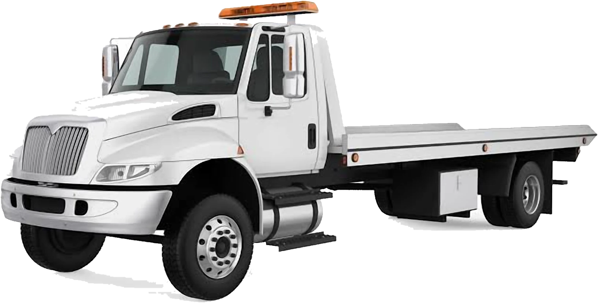
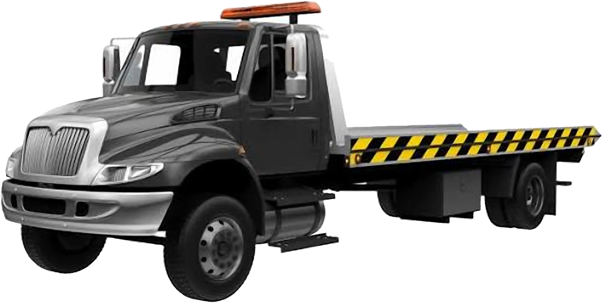
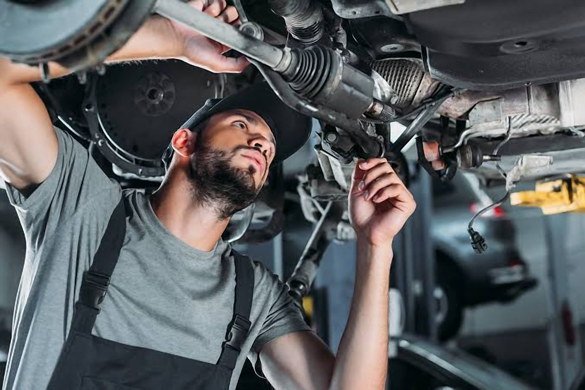
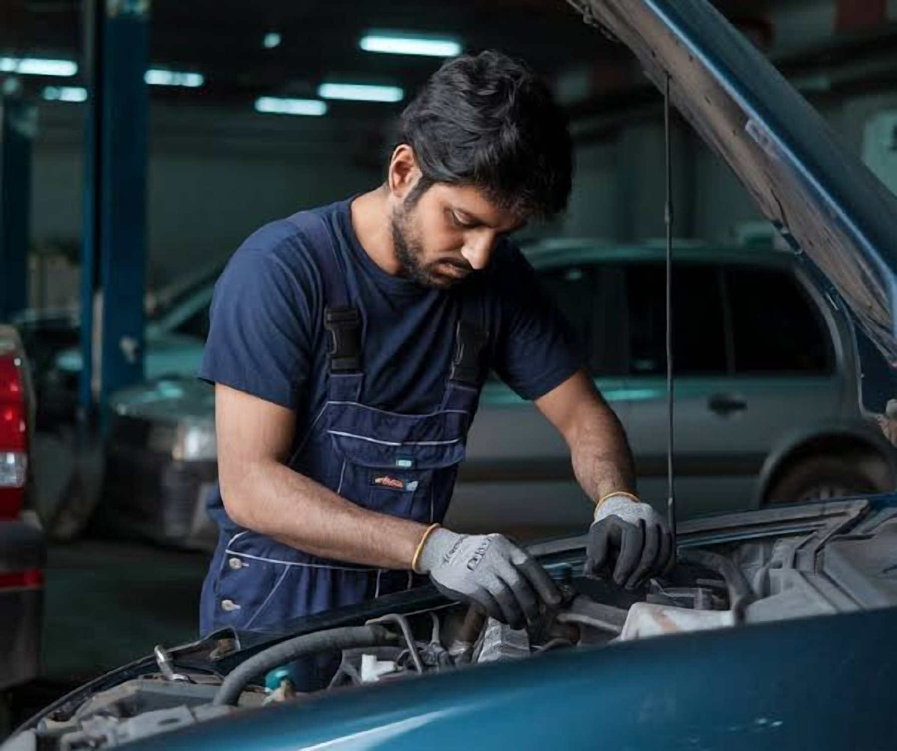
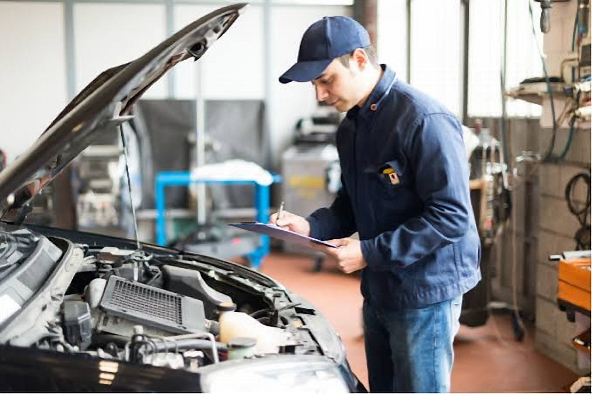
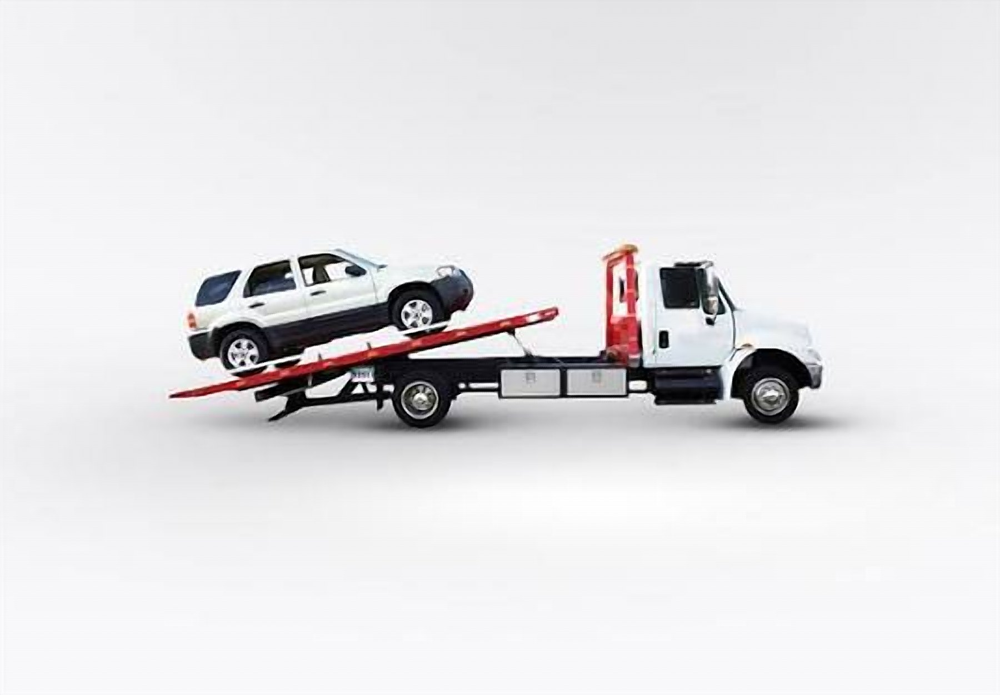

Home / Service Areas / Bahawalpur
Car Towing in Bahawalpur
Your vehicle may break down at any time. If your car has broken down on a busy road, or there is a mechanical issue, we can help you get reliable car towing in Bahawalpur.
TowingMechanicRecovery
Services in Bahawalpur
How we can help in Bahawalpur
Choose a service to open WhatsApp with your city already mentioned.





Our vehicle towing service can help with car towing for drivers in Bahawalpur. If you have a small car or sedan, or a large vehicle we can help to arrange the right towing service for your needs.
Professional Car Towing in Bahawalpur
If your vehicle is unable to continue its journey, we can help you with professional towing. Our car towing service can help drivers in Bahawalpur with breakdowns, damaged vehicles and getting your vehicle to the workshop.
We can help with:
- Car Breakdowns
- Damaged Vehicles from Accidents
- Vehicle Shifting to Mechanic/Workshop
- Non-Starting Cars
- Local/Intercity Transport
- Various Passenger Vehicles
Please let us know where you would like us to pick up your vehicle, what type of vehicle you have and where you would like it delivered.
Car Recovery Service Near Me
If you are looking for a car recovery service near me, it is likely that you require assistance where you are. Whether you are driving through Bahawalpur or within the city itself, you may experience an unexpected problem with your vehicle.
We can help with:
- Engine/Mechanical Issues
- Vehicle Won’t Start
- Moving a Vehicle from an Accident
- Vehicle Cannot Be Driven Safely
- Moving a Vehicle from the Side of the Road
- Moving a Vehicle to a Repair Workshop
Please provide accurate details of where you are located.
Tow Truck Service
If you are looking for a tow truck near me in Bahawalpur then we can help. Depending on the size, condition and location of your vehicle we can help to arrange the right towing service.
We can help with:
- Hatchbacks/Small Cars
- Sedans
- SUV/Crossover
- Damaged Vehicle
- Vehicle to Workshop
Please let us know what vehicle you have and if there has been any damage to the wheels, steering or any other parts.
Emergency Car Towing
If your vehicle has broken down or been involved in an accident you may have a vehicle in an unsafe or inconvenient position. If your vehicle is damaged trying to drive it could cause more issues.
If your car has broken down try to move to a safe place, turn on your hazard lights and contact a suitable towing service.
We can help with:
- Cars Involved in Road Accidents
- Mechanical Issues
- Tyre/Wheel Damage
- Vehicle Can’t Be Driven
- Cars Needing to be Moved to a Local Workshop
Please let us know how your vehicle is.
Heavy Duty Towing in Bahawalpur
If you have a larger vehicle or something heavier than a normal passenger vehicle we may need to arrange a different towing service. If you are looking for heavy duty towing please let us know what vehicle you have, approximate weight and where you would like us to pick it up from.
Depending on the size, condition and requirements of your vehicle we can arrange the right towing service.
Please contact us to see if we have the right equipment for your vehicle.
Areas Covered in Bahawalpur
We can help you find a suitable towing service in your area so you don’t waste time waiting for your car to break down. Depending on availability we can help with towing from various areas of Bahawalpur.
Areas commonly searched for include:
- Model Town
- Satellite Town
- Civil Lines
- Ahmedpur Road
- Yazman Road
- Baghdad Road
- Circular Road
- Hasilpur Road
- Bahawalpur Bypass
- Airport Road
If your vehicle is located near a residential area, commercial area, main road or highway please let us know exactly where you would like us to pick it up from.
Long Distance Transport from Bahawalpur
Sometimes you may need to transport your vehicle further away from the city. Long distance transport can be useful for moving your car, damaged vehicle from an accident or a non-working car to another city.
We can help with:
- Transport from Bahawalpur to Lahore
- Transport from Bahawalpur to Multan
- Transport from Bahawalpur to Faisalabad
- Transport from Bahawalpur to Sargodha
- Transport from Bahawalpur to Islamabad
- Transport from Bahawalpur to Karachi
Please let us know where you would like your vehicle to go and what type of vehicle you have so we can check availability, arrange transport and give an estimate of costs.
Why Choose Us for Car Towing in Bahawalpur?
When choosing a towing service it is important to think about the condition of your car, what equipment you will need and how far you need to travel.
When contacting us we can help with:
- Vehicle Make and Model
- Exact Pick Up Location
- Why You Need Towing
- Where You Would Like it Taken
- What Type of Towing You Require
- Estimate of Costs
We aim to help you understand what transport we can offer.
Car Towing in Bahawalpur
If your car has broken down, damaged or is unable to move do not risk driving a vehicle that may not be safe.
Contact us with your location, vehicle details and where you would like it delivered.
Need car towing in Bahawalpur? Contact us now via Call or WhatsApp.
How it works
Three simple steps
01
Contact Us
Call MECHOTOW or start a WhatsApp conversation.
02
Explain Your Situation
Share your location, vehicle details, and the type of assistance required.
03
Confirm Availability
Discuss service availability, pricing, and the next steps directly with the MECHOTOW team.
Sending a message or form does not confirm a booking or dispatch a driver. The team will confirm with you directly.
Also serving
Nearby service areas

On the map
Service area: Bahawalpur
City-level map showing the service area. Contact us with your exact location to confirm availability.
FAQ’s
How can I find car towing in Bahawalpur?
Search online for car towing in Bahawalpur or contact a local towing provider. Let them know what type of vehicle you have and where exactly you are.
Do you offer car recovery in Bahawalpur?
We can help with vehicle recovery requirements. This includes breakdowns, damaged vehicles from an accident and getting your car to a workshop. Please check availability.
Can I get a tow truck near me in Bahawalpur?
Let us know where you are and what type of vehicle you have so we can see if we can arrange a suitable tow truck.
Can you tow a car that won’t start?
Yes we can help with towing a car that won’t start. Depending on the condition of the vehicle we can arrange the right towing service to get it to a workshop or somewhere else.
Do you offer accident recovery?
We can help with transporting damaged vehicles from an accident. Please let us know what damage has been done so we can see what towing equipment we will need.
Do you offer heavy duty towing in Bahawalpur?
Depending on the size, weight, availability of equipment and location we can offer heavy duty towing. Please let us know what type of vehicle you have.
Can you transport my car from Bahawalpur to Lahore?
We can help with intercity transport. Please let us know what type of vehicle you have and where you would like us to pick it up from so we can give you an estimate.
What information do I need to provide?
You will need to let us know where you are, what vehicle you have, why you need it towed and where you would like it to go.
How much does car towing cost in Bahawalpur?
The cost will depend on how far you need to travel, what type of vehicle you have, what condition it is in, where you would like us to pick it up from and what equipment you will require. Please contact us for an estimate.
Need help right now?
Call or message MECHOTOW and explain your situation. The team will confirm availability and next steps with you.